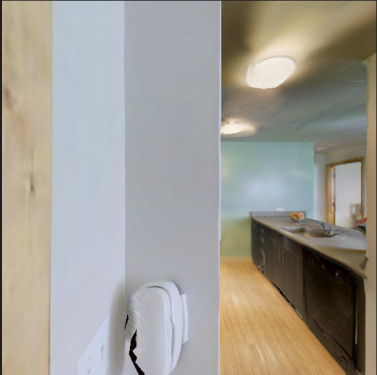
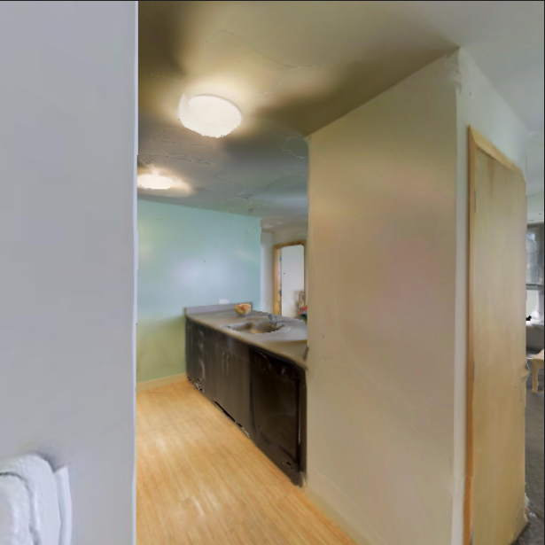
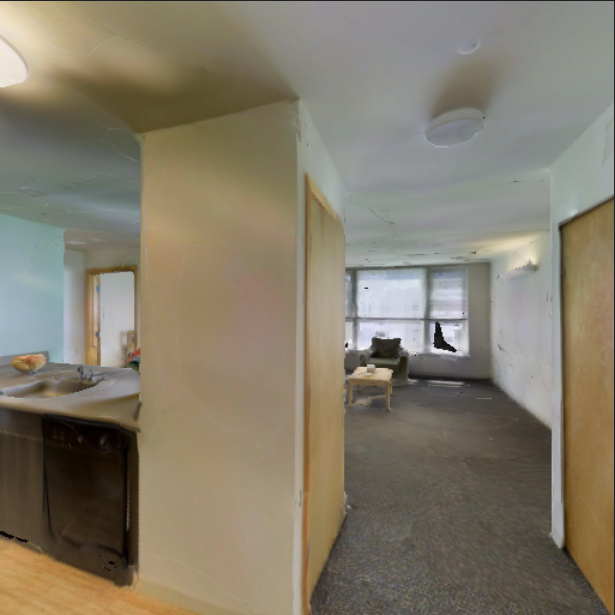
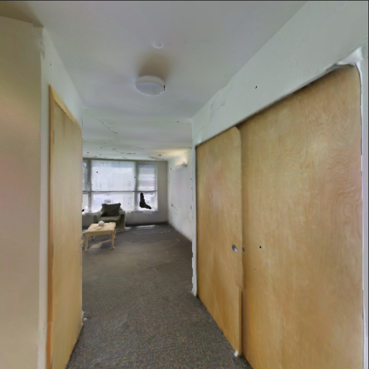
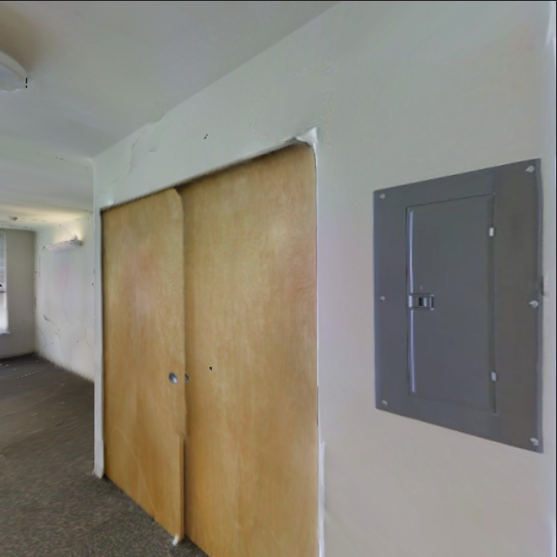
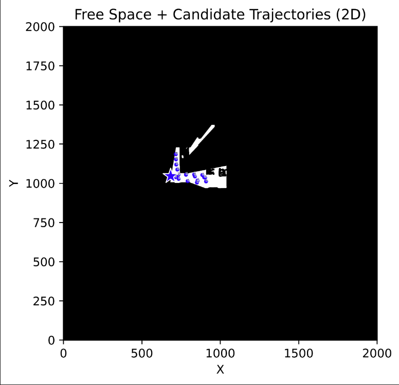
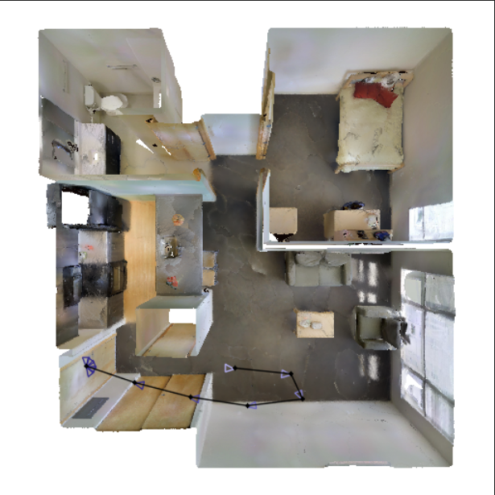
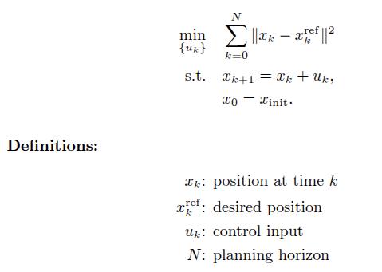

ECE 1100 Discovery Project: RGB-D Mapping and Robot Navigation
This discovery project explores a compact robotics pipeline that ties together perception, planning, and control in simulation. The goal is to start from the RGB-D observations available to an agent in Habitat, reconstruct a usable top-down representation of the environment, plan a collision-free route, and move toward a controller that can track that route in a realistic way. Rather than aiming for a polished autonomous system, this project is focused on building intuition for several core ECE and robotics ideas within one end-to-end workflow.
The method begins with depth projection from RGB-D images to build a 2D occupancy map that separates free and occupied space. Once that map is available, I use Rapidly-Exploring Random Trees to sample candidate states in free space and connect them into a feasible route from start to goal. I then smooth the raw RRT result to obtain a more realistic trajectory for motion execution. The current remaining piece is a simple MPC-style tracking controller that can follow the planned path and roll out the final motion policy in simulation.
More specifically, each depth image provides a partial geometric view of the scene from the robot's current pose. By projecting those depth pixels outward through the camera model, I can estimate where surfaces and obstacles lie in the environment and accumulate that information over time as the agent moves. This creates a top-down map in which cells can be labeled as free, occupied, or still uncertain depending on what has been observed. That map then becomes the planning representation used by the RRT algorithm, allowing the robot to reason about where it can safely travel rather than planning directly from raw images.
Visuals








A major success in this project has been getting the full perception and planning pipeline into a form that produces interpretable maps and candidate paths from realistic simulated sensor data. The main ongoing challenge is closing the loop with trajectory tracking so that the planned path is not only geometrically valid, but also dynamically executable by the robot model.
Overall, this project has helped me connect computer vision, motion planning, and control in one system. It has given me hands-on practice with RGB-D processing, occupancy mapping, sampling-based planning, and controller design, which are all central technical themes in robotics and electrical and computer engineering.
Future Improvements
- Complete the MPC-style tracking controller and evaluate how well it follows smoothed trajectories under realistic motion constraints.
- Improve the occupancy mapping stage by handling unknown space more explicitly and reducing noise from imperfect depth observations.
- Compare raw RRT, smoothed RRT, and other planning strategies such as RRT* to better understand tradeoffs in path quality, computation time, and robustness.
- Extend the system to more complex scenes and longer exploration tasks to study how mapping and trajectory tracking performance scale with environment difficulty.
Active Mapping with 3D Gaussian Splatting
In this project I built an active mapping pipeline that allows a robot to choose where to explore next instead of passively recording its surroundings. By representing the environment as a collection of 3D Gaussians, the system estimates which regions are most uncertain and selects a Next Best View (NBV) and Next Best Trajectory (NBT) to reduce that uncertainty. This approach enables autonomous agents to reconstruct unknown environments more efficiently than traditional SLAM techniques.
Developing this pipeline involved designing an entropy-based scoring function to rank potential viewpoints and implementing an optimization framework to generate smooth trajectories through informative areas. I wrote software to integrate sensors, process large datasets, and visualize results. The outcome is a flexible mapping system that can be extended to multi-robot exploration and search-and-rescue scenarios.
Dynamic Gap Planning for Autonomous Driving
I also helped develop a dynamic gap planner for autonomous vehicles. When a car shares the road with other traffic it must identify safe openings and adjust its trajectory accordingly. Our planner analyzes perception data from cameras and LiDAR to detect gaps in traffic and generates smooth paths through those gaps using differential flatness and feedback control.
This work required building a perception-to-planning pipeline that segments obstacles and free space and continuously updates the vehicle’s route as the environment changes. The resulting system combines data-driven perception with optimization-based planning and has given me valuable experience at the intersection of machine learning and control systems.